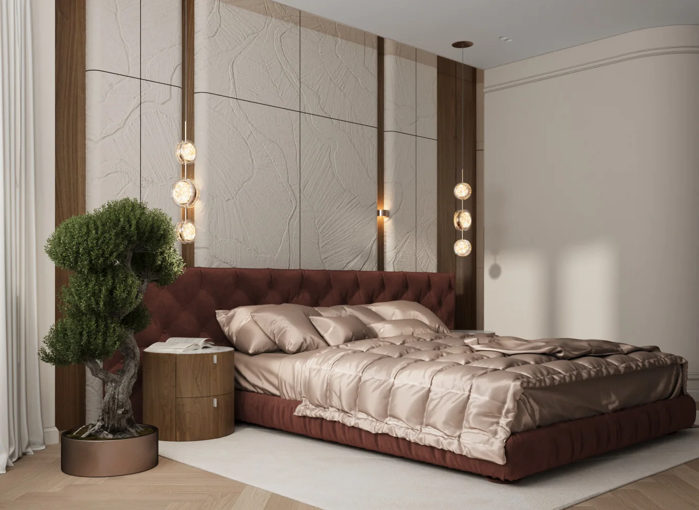
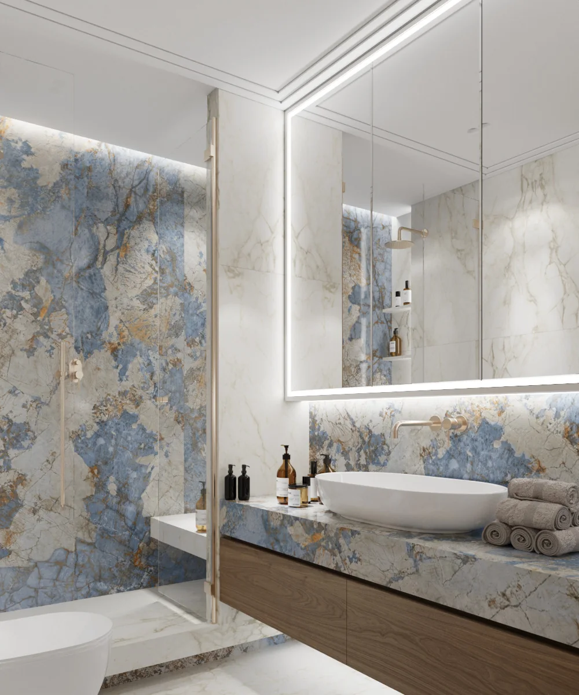
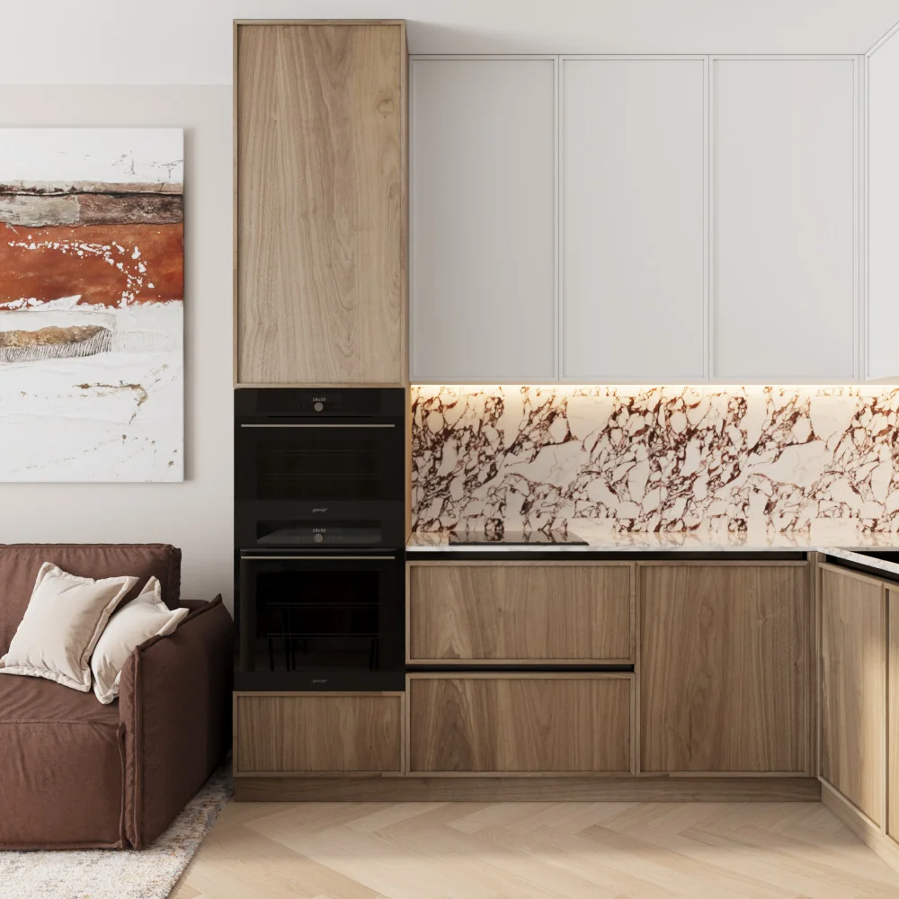

О студии FERRO DESIGN™
Студия авторского интерьерного дизайна и архитектурной 3D-визуализации. Мы проектируем функциональные жилые и коммерческие пространства с продуманной эргономикой, безупречными строительными чертежами и индивидуальными сценариями освещения.

Что входит в полный дизайн-проект
Обмерный план и планировочные решения
Точные лазерные замеры геометрии помещения с фиксацией инженерных коммуникаций, стояков, радиаторов и несущих конструкций. Разработка 3–4 вариантов эргономичной перепланировки с грамотным зонированием и расстановкой мебели с учетом строительных норм и индивидуальных маршрутов движения.
Фотореалистичные 3D-визуализации
Высокодетализированная 3D-визуализация каждого помещения в дневном и вечернем сценариях освещения. Точная передача текстур дерева, камня, керамогранита, декоративной штукатурки и заказной мебели, позволяющая увидеть готовый интерьер еще до начала строительных работ.
Рабочая строительная документация
Пакет чертежей для строителей: планы демонтажа и возведения перегородок, схемы размещения розеток и выключателей, сценарии управления светом, привязка сантехнических приборов, раскладка теплых полов, вентиляции и кондиционирования, а также подробные развертки всех стен.
Спецификация материалов и комплектация
Сводная ведомость с прямыми артикулами, брендами, площадями и объемами напольных покрытий, плитки, сантехники, светильников и заказных мебельных позиций с проверенными поставщиками.
Авторский надзор и комплектация
Дизайн-проект — это подробная архитектурная инструкция, а авторский надзор — гарантия того, что объект в реальности будет выглядеть в точности как на 3D-рендерах. В процессе ремонта неизбежно возникают скрытые строительные нюансы, требующие оперативного решения автора проекта.
В рамках авторского надзора мы берем на себя:
- Регулярные выезды на объект и контроль строителей на каждом этапе черновых и чистовых работ.
- Проверку соответствия возводимых перегородок, ниш и инженерных трасс проектным чертежам.
- Решение скрытых технических узлов и оперативное внесение правок в рабочую документацию.
- Выкрасы стен на объекте при реальном дневном и искусственном освещении, подбор оттенков шпона и текстиля.
- Контроль своевременных поставок отделочных материалов и мебели, оперативный подбор аналогов в случае снятия позиций с производства.
Авторский надзор экономит время и бюджет заказчика, полностью исключая риск дорогостоящих строительных переделок.



География проектов
Студия FERRO DESIGN™ базируется в Екатеринбурге и активно проектирует жилые и коммерческие пространства на территории Свердловской области. Мы также успешно реализуем частные резиденции, квартиры и коммерческие объекты в Сочи, Москве, ХМАО и других регионах России в формате отточенного удаленного проектирования.
 ШТАБ-КВАРТИРА
ШТАБ-КВАРТИРА
Екатеринбург и Урал
Флагманские проекты квартир в жилых комплексах бизнес- и премиум-класса, загородные дома и авторский надзор.

КУРОРТНЫЙ РЕГИОНСочи & Юг
Апартаменты для комфортного отдыха и премиальная арендная недвижимость с панорамными видовыми характеристиками.
 СЕВЕРНЫЙ ВЕКТОР
СЕВЕРНЫЙ ВЕКТОР
ХМАО & Тюмень
Просторные частные загородные резиденции и коттеджи с адаптивными теплыми сценариями освещения.
 ВСЯ РОССИЯ
ВСЯ РОССИЯ
Дистанционно по РФ
Полный комплект строительных чертежей, спецификации и онлайн-сопровождение строителей в любом регионе.
Часто задаваемые вопросы (FAQ)
Сколько времени занимает разработка дизайн-проекта?
В среднем полный дизайн-проект разрабатывается от 2 до 3 месяцев. Точные сроки зависят от общей площади объекта, сложности планировочной структуры, наличия нестандартных инженерных систем и скорости согласования концепций заказчиком.
На каком этапе ремонта необходимо обращаться к дизайнеру?
Оптимальный момент — еще до получения ключей или за 2–3 месяца до планируемого выхода строителей на площадку. Это позволяет без спешки продумать эргономику, подготовить детальные строительные чертежи и заранее оформить заказы на чистовые материалы и заказную мебель длительного срока производства.
Можно ли заказать только планировочное решение?
Да. Мы предоставляем услугу разработки планировочного решения: в нее входят подробные обмеры, план демонтажа и возведения перегородок, а также от 3 до 4 вариантов эргономичной расстановки мебели и функционального зонирования.
Зачем нужен авторский надзор, если у меня есть опытная строительная бригада?
Строители отвечают за технологическое качество (ровность стен, надежность соединений), но они не знают художественного и композиционного замысла автора. Авторский надзор гарантирует, что каждый миллиметр чертежа будет воплощен в реальность, стыки материалов сойдутся идеально, а любые отклонения геометрии стен будут своевременно скомпенсированы без ущерба для финального результата.
Как строится удаленная работа с объектами в других городах?
Процесс полностью прозрачен: все обсуждения, демонстрации планировок и 3D-визуализаций проходят на онлайн-встречах. Проектный альбом передается в формате PDF со всеми спецификациями и ссылками на проверенных поставщиков.
Помогаете ли вы с подбором проверенных строителей и поставщиков?
Да. Мы работаем с проверенными строительными подрядчиками, специализирующимися на авторских проектах, а также с надежными производителями заказной корпусной мебели, текстиля и керамогранита, предоставляя клиентам проверенные контакты и партнерские условия.
Контакты
Готовы обсудить ваш проект? Свяжитесь с нами удобным для вас способом.
Быстрая связь
Напишите напрямую основателю студии в мессенджере или позвоните — ответим на все вопросы и сориентируем по срокам и стоимости.